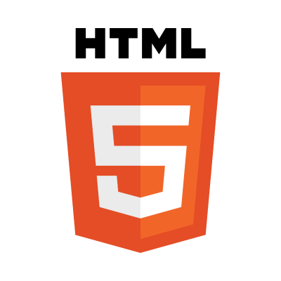
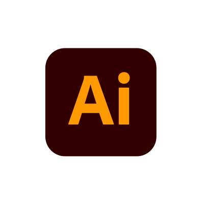
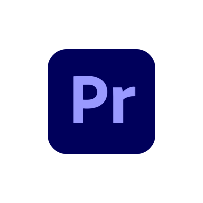

Herramientas utilizadas
Excel

HTML
CSS
Javascript
Figma

Illustrator
Photoshop

Premiere
CapCut
Notion
SQL
.NET
Glide
Wordpress
Este portafolio personal es mi proyecto, al igual que un resumen y muestra de todo lo aprendido con el Diseño UX/UI y el desarrollo Frontend.
Si quieres ver el sistema de dise√±o que hice para est√© proyecto sigue el enlace con el siguiente bot√≥n üëá
Ver PrototipoExcel
HTML
CSS
Javascript
Figma
Illustrator
Photoshop
Premiere
CapCut
Notion
SQL
.NET
Glide
Wordpress
En mi juventud el skate boarding lograba dinamizarme para mover el cuerpo evitando el sedentarismo, pero sentia que faltaba esa oportunidad de trabajar en equipo.
Cuando empiezo mi vida laboral, mis amigos de tabla conocen el Ultimate frisbee y con ellos me uno a este deporte totalmente nuevo para ese entonces y quedo totalmente enganchado, desde ahi nace mi vocación por moverme.
Como grupo, logramos hacer surgir dicho deporte en la region de Cali y municipios aledaños, en forma autodidacta y con dedicación logramos mejorar como deportistas, cuando iniciamos no eramos mas que 14 jugadores, hoy hay mas de 500 jugadores en la zona
En mi afan de mejorar mi entrenamiento personal conozco el Yoga el cual me muestra que con pequeños pasos concientes, se logra considerable avance tanto en lo fisico, mental y sentimental.
Desde ahí entiendo que el deporte y el movimiento no es solo un hobbie, sino una parte importante del ser, que te ayuda día a día tanto en lo personal, como en lo laborar manteniendo tu ser en un equilibro del cual puede estar conciente.
Estos son algunos de los proyectos en los que he participado o en los cuales presto mis servicios como asesor y diseñador

Certamen de Ultimate frisbee que que se lleva acabo el fin de semana festivo del mes de agosto y que para el 2023 realizara su version XVII
De este proyecto, llevo siendo colaborador hace 14 años con el cargo de lider logístico de sistemas de juego, en la toma de datos de cada partidos. Para está labor me ayudo netamente de Excel y VBA
La responsabilidad principal del cargo, es dar los resultados en la posición de Campeon y Subcampeon de cada catégoria, al igual que los resultados individuales de cada jugador como (Goles, asistencias, bloqueos)
Trabajar en este certamen me ha motivado año tras año a mejorar los conocimientos en diseño y programación web lo tengo como proyecto personal que he ido prototipando aprovechando herramientas No-code y al cual nombre:
Lest´s Play Ultimate
Si te interesa gestionar sistemas de juego o torneos de ultimate Frisbee o quieres saber sobre el prototipo que tengo de este proyecto, no dudes en contactarme üëá.
Proyecto personal, que da como resultado una plantilla Excel, programada con VBA , para gestionar proceso de factura y administracion en restaurantes con servicio a la mesa y domicilios
la solucion nace del afán de resolver problemas que vivia en @elgourmetdelamami como chef principal, para gestionar procesos administrativos.
la plantilla se enfoca en ayudar a gestionar de forma sencilla el costeo real de los productos, la estandarización de las recetas, el manejo de compras, ventas, inventarios y provisión de materia prima al igual que la gestion de clientes para entrega de producto.
Como resultado positivo se agilizo procesos de servicio al cliente, en toma de datos y pedidos,para su correcta produción y distribución efectiva de los productos en mesa y domicilio.
Si te interesa la plantilla Conta Gourmet para la administraci√≥n de restaurantes, no dudes en preguntarüòÅ.
Próximo taller..